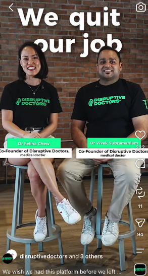
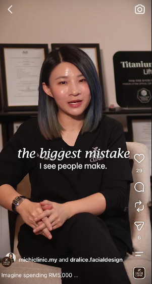
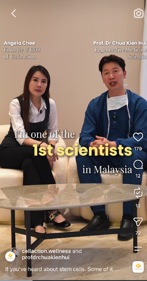
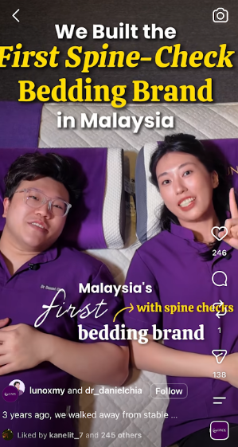
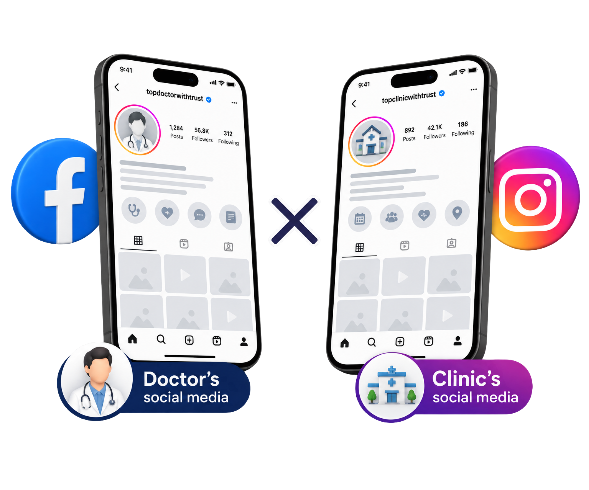
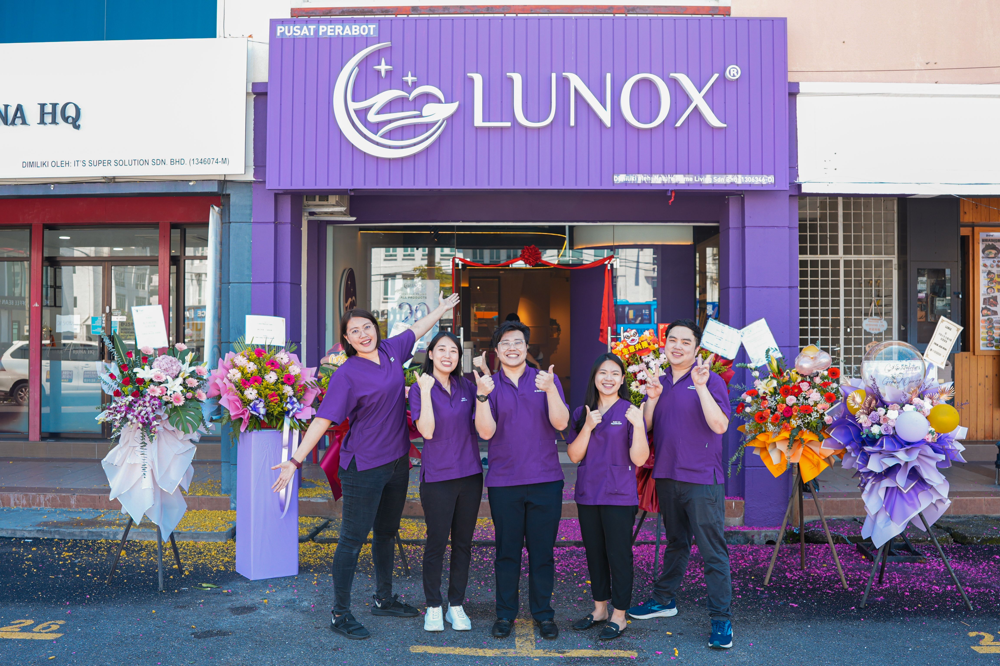

Get fully booked.By becoming trusted online.
We help healthcare professionals become the doctor patients trust and choose through social media content.
BOOK A FREE PAGE AUDIT->



@trustwithcarmen
Founder of USPify
Creator of T.R.U.S.T framework
THE PROBLEM
You spent years
becoming
a good doctor.
But how will patients know that?
HOW TRUST HAS CHANGED
Referral gets you known.
Google gets you found.

Social media gets you remembered.
YOU
Doctor
Patients
Followers
Partners
Media
Brands
Opportunities
like..

.PNG)
SO WHAT DO WE ACTUALLY DO?
We don't just "do social media."
doesn't mean trust
doesn't mean appointment
And if most of your patients still disappear after:
NEW ENQUIRY · WHATSAPP
Then your marketing hasn't done its job.
How much?
We build your personal + clinic page

We trust our T.R.U.S.T framework.
Talent
Be the face patients remember.
People trust people, not clinic logos.
Relatable
Don’t create what YOU want to say.
Create what patients need to hear, their problem, their concerns, and why you’re the right doctor to solve it.
Uniqueness
Every doctor has different expertise, experience and strengths. Make yours clear, so patients would travel or spend more just to see you.
System
Good content means nothing if enquiries can’t convert. Build the right conversion system to capture, follow up and convert interest without leakage.
Teach
Shape how patients perceive you. Teach consistently around what you want to be known for. Patients don’t just see your content, they start seeing you as the expert in that field.
THE GOAL IS SIMPLE.
Before patients contact you, they already trust you.
Hi doctor, how much?
Any promo?
Other clinic cheaper...
Hi Doctor, I’ve been following your videos for awhil
I want to book an appointment.
Don't take our word for it.
Let the results do the talking.

Within 1 Year
Expanded to 3 outlets

RM1M
/month
Content didn't just attract patients.
It opened doors.


Within 2 weeks.


Attracted Patients from China and Indonesia
We don't work with every doctor.
We only work with the right ones who are aligned with our vision.
✅ Tick if you meet the requirements below.
If that's you, we'd like to meet you.